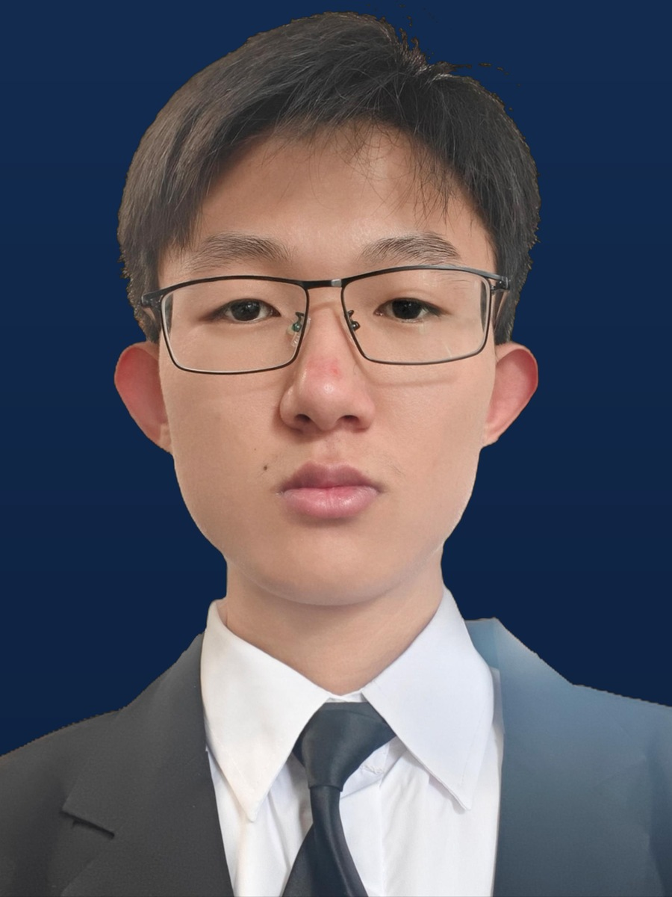

把算法模型做成真正能跑、能交付、能参赛落地的系统。从数据采集到模型推理，从后端接口到界面部署，习惯走完整条链路。在校期间累计获国家级奖项 4 项（含世界职业院校技能大赛金牌），产出4 项发明专利 + 1 项软著。

我是王云龙，广州铁路职业技术学院人工智能学院人工智能 24-3 班学生，方向是人工智能应用工程——把计算机视觉、信号处理和大模型技术，做成真正能跑、能交付、能参赛落地的系统。
在视觉方向，用 YOLO / ONNX Runtime 做工业零件检测、PCB 缺陷核验、产线 SOP 合规判断，也做过基于 SAM2 的图像智能分割和自研标注—训练一体化工具链；在生理信号方向，参与《轨心依在——铁路人员非接触式生命体征监测系统》，用 BCG 心冲击图 + 深度学习做心率检测和异常预警，产出 4 项发明专利受理 + 1 项软件著作权受理；在嵌入式与机器人方向，做过去掉电脑依赖的罐盖焊接检测（4 路麦克风 + FFT，1.2 秒判定）、毫米波雷达体征监测、ROS 人脸跟随机器人；在全栈与平台方向，独立交付过物品出入库管理平台、车轮虫智能检测云平台、MLTrainer 训练工作台等系统。
我习惯"先把系统跑通，再谈架构漂亮"。踩过的坑——跨线程卡顿、外参标定秩亏、ONNX 部署 DLL 报错——让我养成了看数据、看日志、查根因的习惯。团队里我通常是那个愿意把脏活累活扛下来、把方案做到能演示的人。